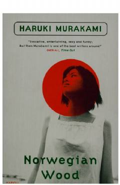

HMSevgi va yo'qotish haqidagi unutilmas yapon romani.
Haruki Murakamining mashhur romani 'Norvegiya daraxti' yigirma yoshli talaba Vatanabening sevgi, yo'qotish va o'sish haqidagi hikoyasini bayon etadi. Roman 1960-yillar Yaponiyasida kechadi va inson qalbining murakkab his-tuyg'ularini chuqur tasvirlaydi. Kitob Jay Rubin tomonidan ingliz tiliga tarjima qilingan va o'zbek tiliga o'girilgan.